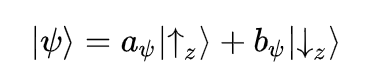
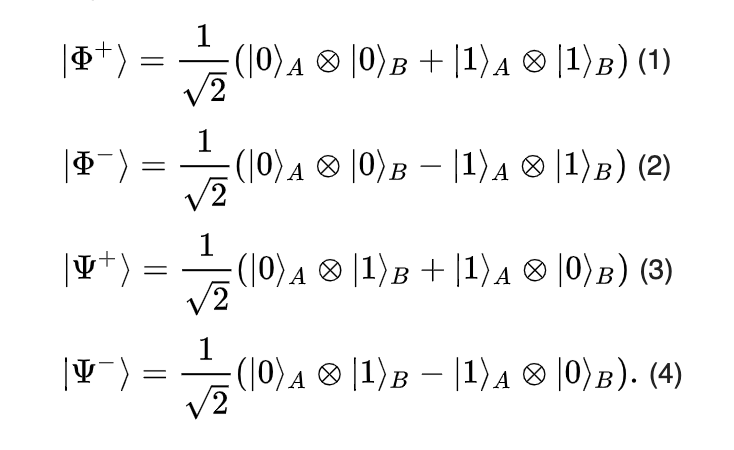
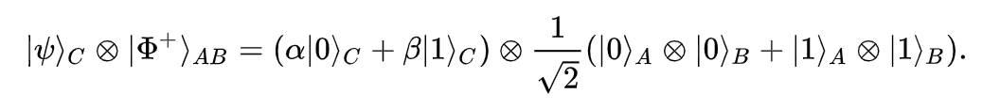
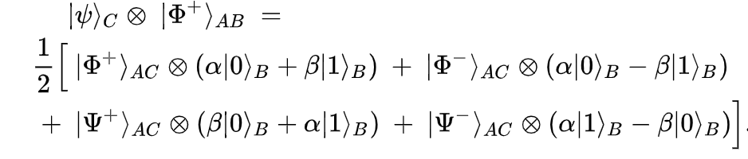
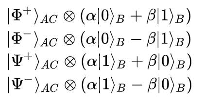

quantum teleportation 101
Twice in the past week i've been asked to explain Quantum Teleportation (QT), firstly at a talk given at a research house and secondly by my tutee. I ended up asking myself plenty of questions as they went by and below wanted to write a concise explanation.
Teleportation Doesn't Really Mean What You Think
Quantum teleportation is a protocol for how we can communicate information with entangled quantum states. It has very little to do with our science fiction idea of teleportation — where matter seemingly hops through space and time. Quantum teleportation concerns itself with how to send a quantum state from one person to another without physically exchanging anything.
It actually requires we also send information through a classical communication channel to work, which leads some to argue it is of limited use. I had the privilege of working with Daniel James (from Univ of Toronto), where he'd regularly joke that the only thing Quantum Teleportation ever moved was him from Los Alamos to Toronto.
How do I draw a dead and alive cat?
Just as quick intro, let's settle on some notation for quantum states. We can express a quantum system with a bra-ket notation. In general, we can only talk about quantum systems, in relation to some experimental observation we could observe. For example, we can always experimentally ask what the spin is along the z axis, and depending on either up/down, we could say the particle is in either ket.

So if we have a particle, which could technically be in either state with certain probabilities, we can express this as a linear combination of the potential outcomes:
In which the quantum system is in the up-state, with |a|² probability and in down-state with probability |b|².
Okay cool, so how do I get me some of that Entanglement?
Without going through the intricacies of the mathematics, entanglement is described (rather poorly) as the inability to express a particle of a group, independently of the other particles in the group.
For example, if I create two particles (say in an explosion), and the total spin of the system was known beforehand, then the spin of the particles is entangled. That is to say, by the Conservation of Spin, if we measure the spin of a particle along an axis, we inherently already know the spin of the other particle along the axis.
Honestly, it is a poor description, and has no agreed measure, especially for mixed states (where we have less than perfect information). However entanglement is important because it adds strong correlates to a system inherently built with the assumption of uncertainty. So much so, physicists are still trying to understand if we should interpret entanglement as a form of causation.
Lets say we got our hands on some of those entangled pairs from the explosion and we use the basis of 0 and 1 to refer to if we measure the spin along the z-axis, then our states can be described as equation 3 or 4 from below.
Looking at our entangled states (Eq. 3 – 4), its easy to notice that whenever we'd measure 0 for A we'd automatically get 1 for B or vice-versa (the two properties are perfectly anti-correlated). Furthermore, remember that the amplitude of a state relates to its probability. For either entangled states, its has a (1/sqrt(2))² or 50% chance or being either found in (A=0, B=1) or (A=1, B=0).
Note also if we consider our measure of spin to be either radially outwards or inwards from the collision then we can consider our entangled states to be described by Equation 1.
How to send Bae a qubit, a true love story
Okay let's say we have Alice and Bob, actually fuck that, let's call them Abdul and Bushra. And Abdul wants to "teleport" his romantic note, conveniently encoded on a qubit C, to Bushra:

We need to give them an entangled qubit, let's imagine we have the first Bell state (Eq. 1 above). Abdul and Bushra then take half of the entangled state each, (for simplicity Abdul takes A and Bushra takes B). Now the fun begins:
1. Abdul then entangles his message C with his half of the entangled state.
To understand what this does, lets ditch expressing our state in terms of the subspaces A,B,C and consider them as a combination of two different subspaces, the Bell states in AC and B:
From this expression, we can see that a measuring the qubit to see which Bell state it is in, results in four possibilities each with a probability of 1/4 of occurring.
2. Abdul makes his measurement, in particular he measures exactly using the Bell states from above, resulting in one of the 4 outcomes below (which he has the information of).
Most importantly look at what Bushra's qubit now looks like, it has amplitudes relating to the alpha and beta which Abdul was trying to send!
3. Abdul then sends the outcome of his measurement, by classical means, to Bushra. Bushra now has to do something depending on what Abdul has observed:
If Abdul observed the first Bell state, then Bushra's qubit is already in the form of C. If Abdul observed any of the other states, we need to perform a simple qubit transformation, all which can be easily applied on a quantum circuit, by the unitary Pauli operations, to transform the state to being correct.
And boom, after these simple transformations, Bushra has changed her qubit to now be qubit C and the state has effectively "transported" from Abdul to Bushra. MAGICAL.
Weird flex but OK?
So have we done anything magical or crazy here?
The first question physicists ask is does this break any current laws we have? In particular, did we break any laws about how the speed of light or information? Thankfully for them, we didn't. As quantum teleportation still requires we send a piece of classical information, we are effectively limited in how fast we can send a state.
Secondly does this break the idea of causality? E.g did we break some idea about how quickly we can cause a change and at what distance it can occur? This is more of a general problem with entanglement, which stands in opposition to local theory — which says "actions at a distance" are negligible as they must travel through a medium or field with a specific speed limit. Physicist aren't decided on this one, and fundamentally, this comes down to a thing called the EPR paradox.